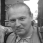

WEAPONS FOR UKRAINE SAVE LIVES! ОРУЖИЕ ДЛЯ УКРАИНЫ СПАСАЕТ ЖИЗНИ!
Ondblclick (двойной клик) просмотреть и скачать изображение в цвете

ОБО МНЕ
Я, Жданов Олег Владимирович, временно гражданин террористического, преступного государства: российская федерация, с которым я нахожусь в состоянии конфликта последние
тридцать лет. Начиная с 2014-го года, в связи с агрессией против Украины, данный конфликт перешёл в "горячую фазу".
 WEAPONS FOR UKRAINE SAVE LIVES!
WEAPONS FOR UKRAINE SAVE LIVES!